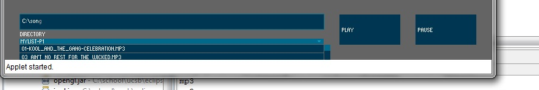
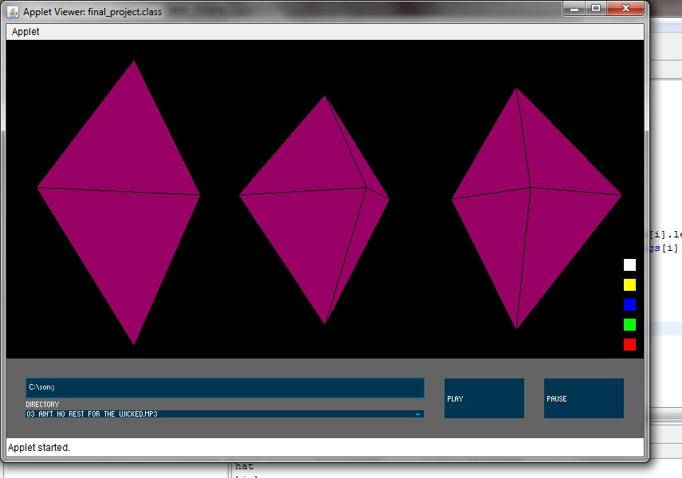
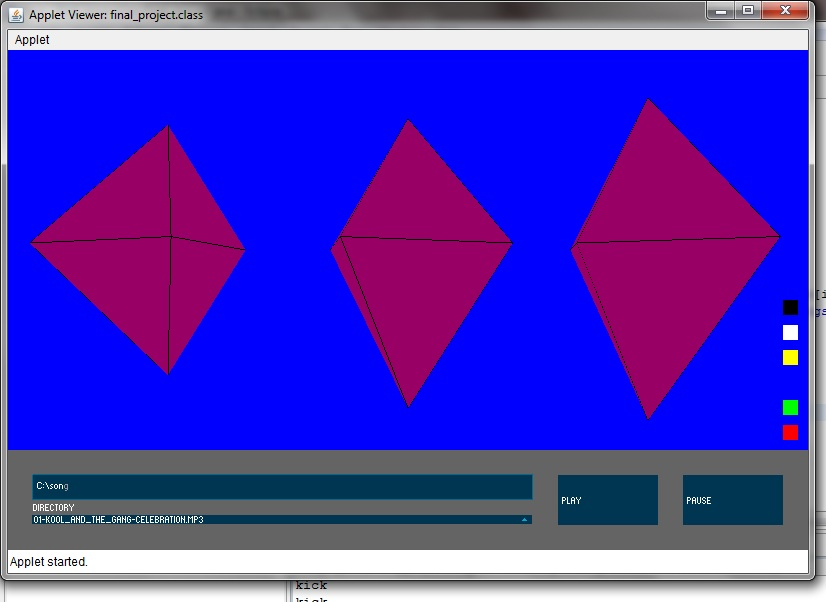

Final Project:
My final project entailed cobining all of the different pieces we have learned (Control P5, Minim, and OpenGL) to create a basic music player, and impleminting a simple visualization for it. The user uses the text field to type in a directory with music files in it. The program then reads all the files in the directory and parses out all of the mp3 files. These are then used to populate a drop down list. Songs can then be selected fromt the List to be played.
The Visualization works by using Minim's Beat Detect operation. 3 diamond shapes are made in openGL, corisponding to kick, snare, and hat beats from left to right. Every time beat detect function detects a beat within those ranges, the shape size is increased and then caused to decrease. The three diamonds also spin in relation to the song being played. A customized range is used for beat detection. If a beat falls withing that range, the spin value is increased.
Lastly, the color swatches on the left side of the player use OPENGL picking to change the background color. Simply click on the box to change the background color at any time.
Once all pieces were working, I placed an emphasis on the user interface. Thus, the drop down list was made sure to only show the mp3 files in any provided directory. Additionally, the color swatches were added to customize the background.
In future implimentations of this project I would like to add more user customizability. Additionally, I want to add more song analysis features, currently, the visualization is rather simple, but I would like to add ways to complicate it.
The Java implimentation needs to import the 64-bit Windows Libraries for opengl, jogl, and gluten. This involved extracted the windows-amd64.jar files and replacing the dll files in the library with those extracted from the jar files. Therefore, the libraries and build path need to be redone
DOWNLOADS:
Set solver:https://github.com/gateswinkler/201B-Processing-Sketches-GatesWinkler/tree/master/final_project